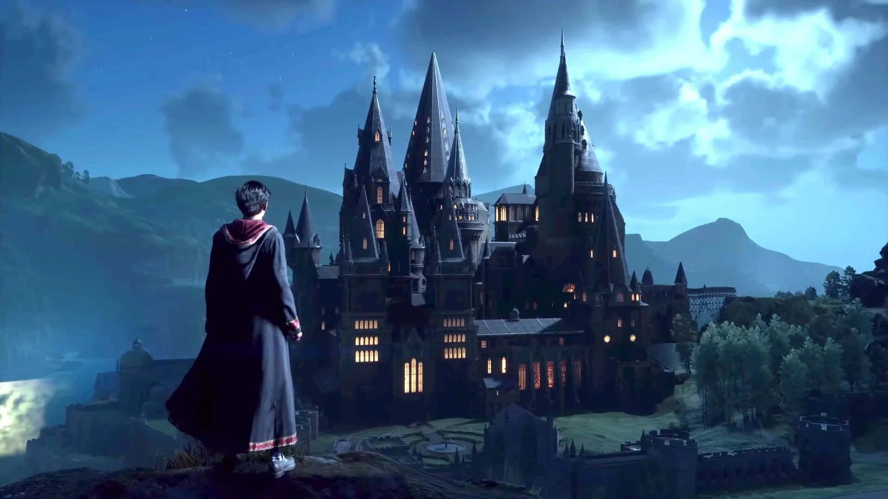
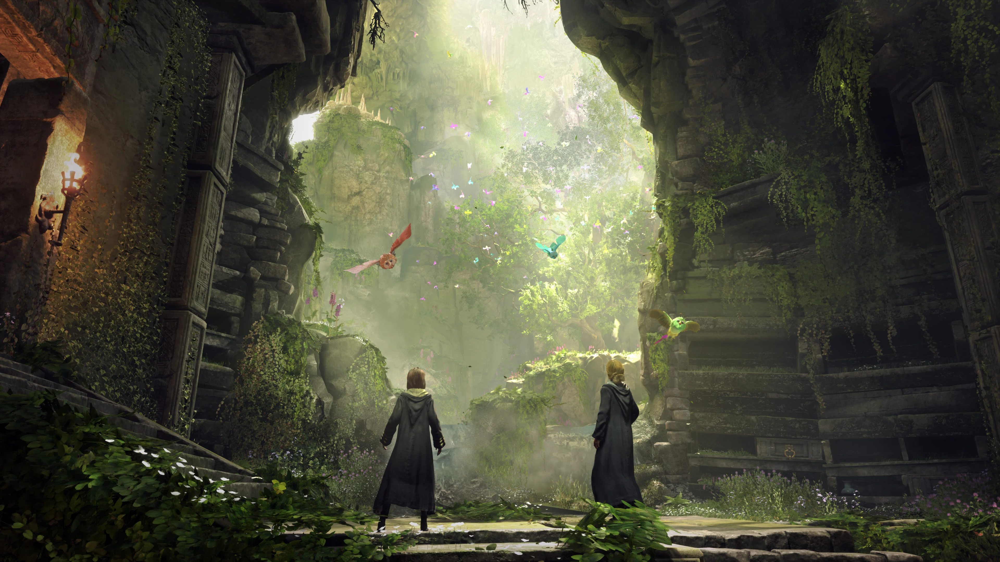

Történet
A Hogwarts Legacy története az 1800-as évek végén játszódik, jóval Harry Potter és barátai előtt. Te egy különleges diákot alakítasz, aki ötödik évében kezdi meg tanulmányait Roxfort Boszorkány- és Varázslóképző Szakiskolában.
A karaktered olyan ősi mágia rejtélyeit fedezheti fel, amelyeket senki sem tud használni, és egyedül te rendelkezhetsz ezzel a különleges képességgel. A történet során olyan döntéseket kell hoznod, amelyek nemcsak a saját sorsodra, hanem a varázsvilág jövőjére is hatással lehetnek. 
Játékmenet
A játék nyitott világú, így szabadon felfedezheted Roxfortot, a Roxforti Rengeteget, Hogsmeade falut és számos más helyszínt. Különféle küldetéseket teljesíthetsz, amelyeket a történet vagy az NPC-k (nem játékos karakterek) kínálnak.
Játékosként lehetőséged van különböző varázslatokat tanulni, bájitalokat készíteni, és mágikus lényeket szelídíteni. A párbajrendszer izgalmas kihívást jelent, hiszen nemcsak támadnod, de védekezned és taktikáznod is kell a siker érdekében.
Az RPG-elemek lehetővé teszik karaktered fejlesztését: testre szabhatod megjelenését, képességeit, és kiválaszthatod, mely házba kerülj (Griffendél, Mardekár, Hugrabug vagy Hollóhát).
A varázsvilág
Roxfort ikonikus helyszínei, mint például a Nagyterem, a Szellemek folyosója vagy a Griffendél klubhelyisége, részletesen kidolgozva várják a játékosokat. Emellett találkozhatsz legendás varázslényekkel, például hippogriffekkel és sárkányokkal.
Hogsmeade faluban különféle boltokat látogathatsz meg, például bájital-összetevőket vásárolhatsz vagy új varázspálcát szerezhetsz. A környező területeken titokzatos romok, barlangok és más felfedeznivalók rejtenek izgalmas kincseket és kihívásokat. 